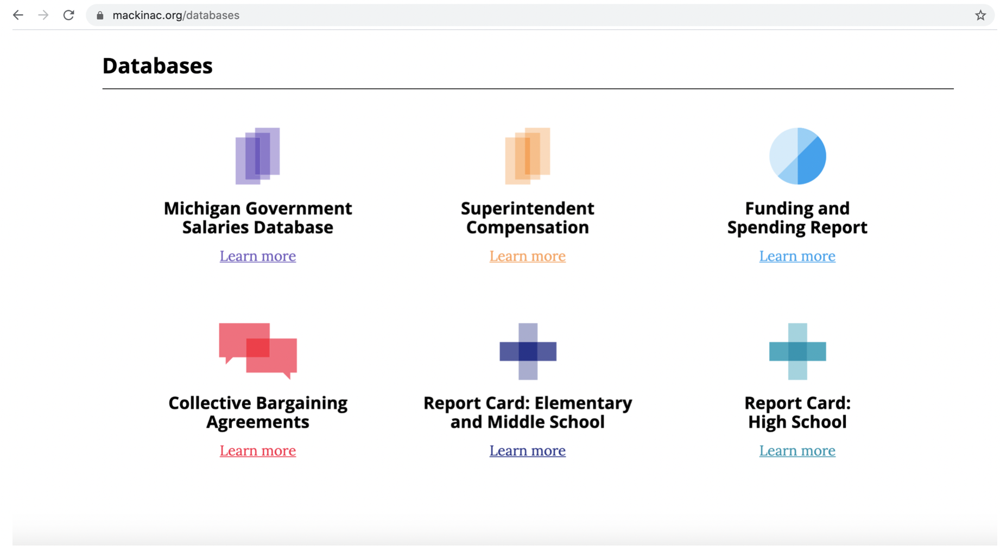

Data Dumping
- Image 1:Wyoming Liberty Group. Dense Equations.
- Image 2:Mackinac Center. Databases
- Image 3:Pioneer Institute. Data Dumping.
Data Dump
">
Hannah Arendt from The Human Condition
Overwhelming users with problematic data is an effective disinformation tactic. Filling "data voids" with misleading data is a common form of disinformation (Bakir & McStay, 2022). Data are symbols of quantitative evidence and authority, a representation of positivism and empiricism, even when they have no value or are uninterpretable. The logic of numbers and statistics can symbolize truth and stability. The SPN publishes large sets of acontextual data on its websites to support its claims, but the data are confusing and difficult to interpret. Marwick and Lewis (2017) highlight how disinformation is dependent on “The preservation of ambiguity” (p. 5) and that “Ambiguity is, itself, a strategy” (p. 11) that producers of misleading information rely on to design disinformation. Kress and van Leeuwen (2006) argue that acontextual data force users “to imagine what he or she is thinking about or looking at” (p. 68) because they cannot form the data into a cohesive message. Visual data “can become a source of representational manipulation” (Kress & van Leeuwen, p. 68) when it lacks contextualization or a visible verb. This insight connects to Cheyfitz definition for disinformation as "a disruption or blockage of critical thinking" (p. 49). Publishing data without providing a frame for users to analyze them is a form of representational manipulation that disrupts critical thinking. The SPN's intentionality to decieve with data is disinformation. Understanding how bad actors use data to confuse audiences is a form of crap detection. Contextualizing data so audiences can read it accurately is an ethical and trustworthy composing practice that builds trust.
Data visualizations require visual literacies for audiences to decode and interpret. They are a genre with a specific set of conventions for structuring and forming meaning. Visually prepositioning, resizing, and reshaping data can distort a user's ability to interpret them. When examining data visualizations, Tufte (1997) recommends assessing the ethical and moral value of an image or data visual and conducting a complete and comprehensive “source of history" of the visualization to give it value and authority (p. 25). Asking where the image or data came from is an important question. “Making verbs visible is at the heart of visual design,” so examining how visuals act and how they facilitate action is important for understanding what data is and does (Tufte, p. 55). Visualizing and locating verbs in data visuals are important critical literacies. Hiding the verbs, or failing to provide them, is a deliberate and intentional distortion of a visual's meaning, which is disinformation by definition. The Civitas's "Mapping the Left Project" uses visuals, charts, and graphs to keep track of the names of voters. Civitas provides audiences with an interactive visualization for identifying the names of democratic voters, activists, and organizations in the state of North Carolina, but the value of this data is unspecified. Even though the purpose of the data visualization is unclear, the presence of a data visualization can serve as a symbol of research and knowledge without providing useful information.
The Tax Education Foundation (TEF) in Iowa had a link on its website to a 104-page data report about education savings accounts that would require significant time to read and interpret. This lengthy report, written by a visiting scholar, was never intended to be read. It is a representation of academic rigor, filled with jargon, numbers, equations, and graphs that are difficult to interpret. Again, even when the data is unreadable, its presence can symbolize credibility. 90 of the 104 pages in the TEF report are tables of figures and numbers about the estimated effects of a state bill on education reform that very few audiences will be able to analyze without a context and specific verbs.
The Empire Center for Public Policy (ECPP) houses a large amount of acontextual data on its website without providing audiences with a frame to interpret the data. Audiences are left on their own to decode the data. The ECPP website contains confusing data sets that support misleading claims for a range of issues. Many of these data sets distort the meaning of the claims they seek to bolster.
Figure 1: ECPP Decontextualized Data. Accessed 6-7-2020.
Tufte (1997) explains that when “scientific images become dequantified, the language of analysis may drift toward credulous descriptions of form, pattern, and configuration rather than answers to the questions: How many? How often? Where? How much?” (p. 23). The presence of specific forms, patterns, and configurations can become symbols and representations of credibility instead of the quality of the research methods and its results. If graphs and charts possess the right form, pattern, and configuration, they can become authoritative despite failing to provide accurate data. The intentional use of graphs to mislead people is a form of disinformation. All SPN data promote and advance the SPN's ongoing narratives for climate science denial, privatizing education, deregulating industry, providing corporate tax cuts, and legislating voter suppression movements. Manipulating data is part of a disinformation campaign designed to shift reality.
The Pioneer Institute (PI), the Mackinac Center for Public Policy, and the Pegasus Institute rely on a similar tactic for publishing data. For example, the PI's quantitative data about Covid is difficult to interpret and decode because there is no background on how the data was generated, analyzed, and processed; however, the presence of this data gives the illusion that the PI is a rigorous research organization. It is also difficult to assess the ethicality and factuality of a data visual when the visual has been recontexualized numerous times and purposely decontextualized. Without an understanding of where data come from, without its history, audiences may struggle to analyze the data. Users can examine the Mackinac Center's webpage below and other SPN websites and practice locating problematic data and explaining how and why it's dishonest or problematic.

Figure 2: Mackinac Center for Public Policy Data Dump. Accessed 6-9-2020.
The Wyoming Liberty Group (WLG) provides audiences with images of equations that require the assistance of an expert to solve. Most audiences will find it difficult to interpret an equation like the one provided below. Again, it is this intentionality to use data to mislead people and to slow down one's critical thinking that makes the SPN a disinformation network. The SPN wants to provide counter facts across its network over time to compete with inconvenient facts that interfere with corporate and industry profits. The example below has since been removed from the WLG website.
Figure 3: Wyoming Liberty Group Confusing Data. 6-17-2020.
Many people interpret the presence and complexity of equations as a marker of intellectual rigor and fact despite being able to understand them. Math equations are symbols of power and intelligence within cultures obssessed with positivism and empiricism. Equations can acquire authority and power from their incomprehensiblity. Identifying the misapplication of sources and data and recognizing how random equations are used for disinformation is a form of crap detection. Many of these misleading equations and data are endorsed or created by experts. Using experts to endorse difficult and incomprehensible equations is a common disinformation tactic that creates additonal layers of confusion.